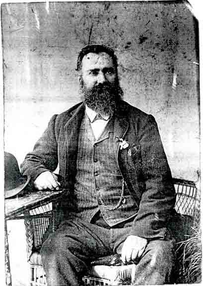
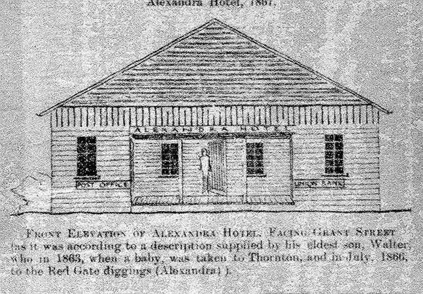

Documentation for Richard John Vining - Eliza Morgan
Thank you to Jamie Vining for the information below.
Family Data
Photograph of Richard John Vining:

“Richard John Vining moved to the Alexandra area (formerly known as the Red Gate Diggings), Victoria, Australia, around 1866 and was the proprietor of the Alexandra Hotel. The building was originally designed to be a post office and a bank as well, going by the drawing [below] made by his son Walter Earnest.”
